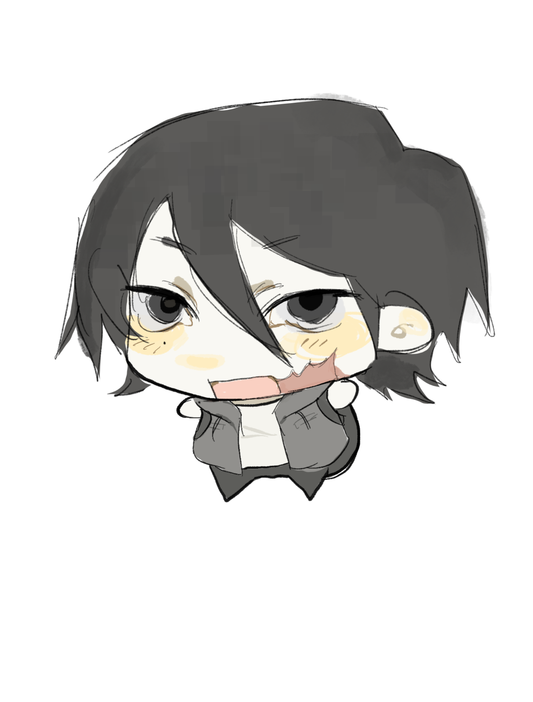

CHARACTER FILE / 001
シルヴァン



PROFILE
NAME シルヴァン
AGE 38歳
HEIGHT 184cm
GENDER 性別を入力
PERSONALITY
ここにキャラクターの性格を書く。 好きなものや嫌いなもの、普段の様子など。
BACKGROUND
ここにキャラクターの過去や設定を書く。 秘密にしておきたい情報を書くのもあり。
CHARACTER ARCHIVE